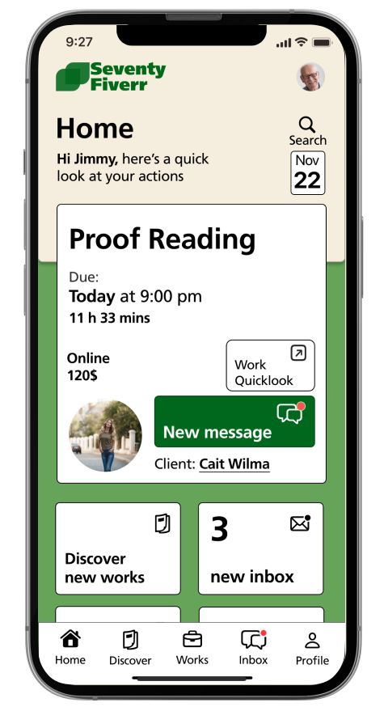

Mobile Interface Design
This project helped me had the opportunity to explore how to do a mobile interface with a specific target user, which is elderly above 75 years old. Through the combination of UX/UI design and user researching, I was able to bring a new way for interface for our idea, which is SeventyFiverr.
What I did
- Design Layout
- Logo Designing
- Conduct Research
SFU Fall 2022 Representative Project: hhttps://www.sfu.ca/siat/showcase/fall-2022-project-showcase/explore-the-projects/iat-334-seventyfiverr.html

Problem
People who are in their 60s to 75s are now having to face difficulties in using smartphone. In addition, they still have a demand for getting income after the retirement. However, there are few of job application focus on the ederly work labor.
Solution
Based on the problem above, the app offers the following solutions: Focus on the desire to find work for the elderly. Protect the rights of the elderly workers. Easy to navigate with instruction build-in. Simple Process and User Interface.

User’s story
We conducted research on potential activities for senior citizens, while also gathering user stories. Meet Sam, a 76-year-old retiree who recently left her job at a local bank and is now feeling bored. With a strong interest in finance and a solid understanding of financial planning, Sam is seeking part-time or freelance work as a financial advisor. Through extensive research, advice from acquaintances, and offering her services to friends and family, Sam successfully established a client base and expanded her business. As a freelance financial advisor, she found satisfaction in assisting others in reaching their financial objectives while maintaining a healthy work-life balance.
Challenging
Interview
Empowering Seniors
Interface
Future development
One potential future development for creating a freelancer application for elderly individuals could be the implementation of virtual training programs. With virtual training, seniors would have access to a wide range of resources and tutorials that can teach them new skills, such as how to use the application, how to market themselves, and how to manage their finances.


Reflection
During the project, as a person following UX/UI, I learned a lot about putting user in center principles and user experience. I also gained insight how to design an application with a specific target user. Through the process, I improved my researching and design for both usability and accessibility. Overall, the project allowed me to deepen my understanding of website design and user experience, while also developing valuable skills for future projects.